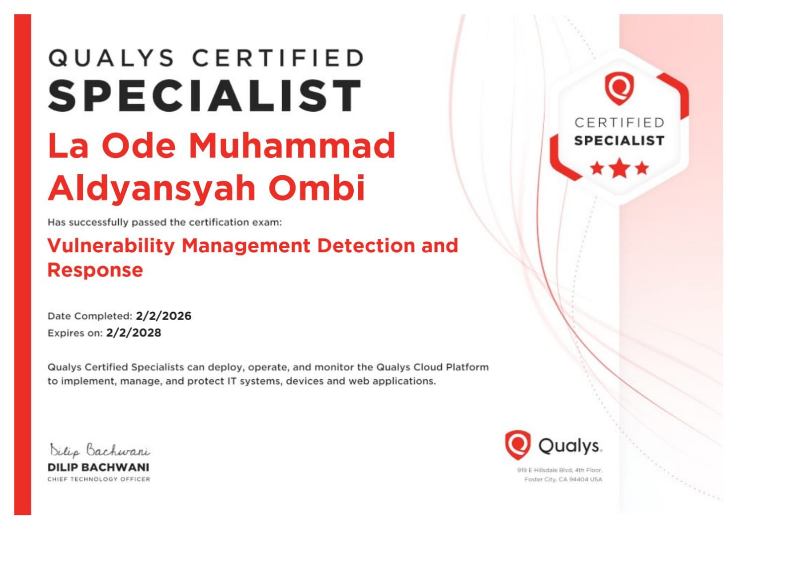
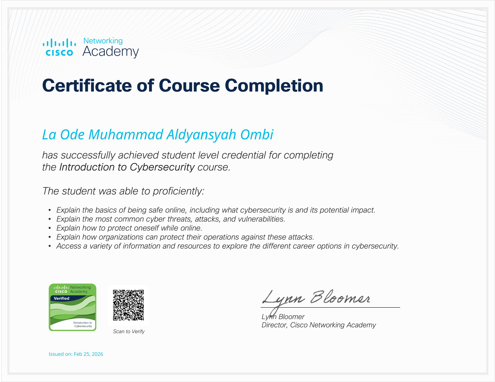

AUTHENTICATED ACCESS
Cyber Security | Penetration Testing | SoC Analyst
Halo! Saya Aldi, mahasiswa Ilmu Komputer di Universitas Halu Oleo (2024). Saat ini saya sedang mendalami dunia keamanan siber, khususnya di bidang penetration testing/bug hunting dan Soc Analyst sebagai bagian dari proses belajar saya.
Dataabsolute (India-based IT Firm)
Qualys Training & Certification
Telah menyelesaikan pelatihan mengenai manajemen kerentanan, termasuk identifikasi aset, deteksi ancaman, dan prioritas remediasi menggunakan standar industri Qualys.

Qualys Vulnerability Management Certificate
Cisco Networking Academy
Berhasil menyelesaikan kursus tingkat profesional yang mencakup dasar-dasar ancaman siber, perlindungan privasi online, serta cara organisasi melindungi operasional mereka dari serangan.
